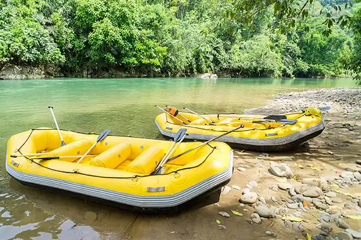

White Water Rafting was founded in the obscure little town of Loremipsum
US, which rested along the Adipiscing River. It was founded by
Fugaids Vouptatem, along with Alicam Undi and Carson Cannon. We founded this
organization so people could enjoy the river . Thus the seed was born. From
there we advertized and it became very popular, and
continued to expanded our business as we hired people.

From there it grew even bigger as we
hired people with much education, so we could handle logistical challanges, and
expanded our domain to other areas.
Though we faced some troubles along the way, like dealing with bottlenecks, we
were able to overcome it with smart planning. Smart planning is why we were able
to ensure safety. We learned, "always be prepared".